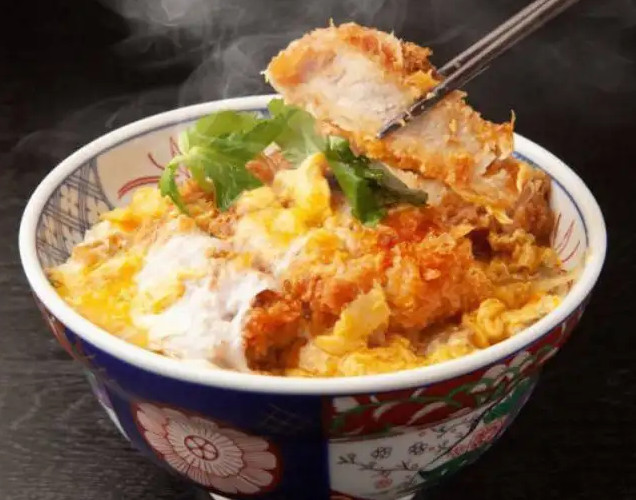

Katsudon
Top Page

Description
Katsudon is a Japanese pork cutlet rice bowl made with Tonkatsu, eggs, and sauteed onions simmered in a sweet and savory sauce. It’s a one-bowl wonder and true comfort food!
Ingredients
- Tonkatsu - regular deep-fried version or baked version
- Onion
- Broth - dashi, sugar, mirin and soy sauce
- Eggs
- Green onion
- Freshly steamed, Japanese short-grain rice
Steps
- Make Tonkatsu (I have a very detailed recipe here) if you haven’t made yet.
- Cook the onion in the savory broth till tender.
- Place Tonkatsu on top to let it absorb the flavors of the broth.
- Add the beaten egg mixture and cook till just set
- Serve over steamed rice and enjoy!